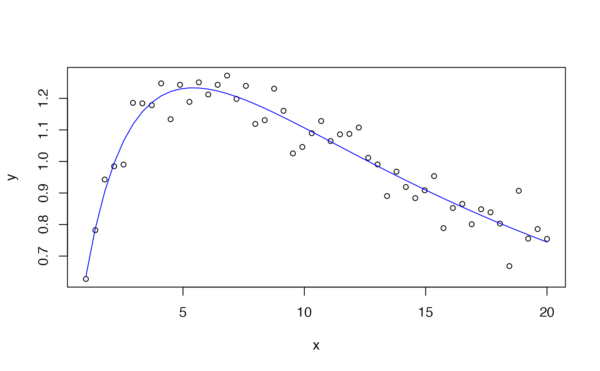

Third-Order Inverse Polynomial Model
Source:R/self_starting_nls.R, R/self_starting_drc.R
invpoly3.RdThese functions provide Third-Order Inverse Polynomial Model equation (invpoly3.fun()), as well as the self-starters for the nls() (SSinvpoly3()) and drc::drm() functions (DRCinvpoly3()).
Arguments
- x
A numeric vector of non-zero positive values (e.g., dose, time).
- a
The coefficient of the \(1/x\) term in the linearised form. Controls the initial rise of the curve near the origin.
- b
The coefficient of the linear term in the denominator. Along with
candd, determines the shape and location of any peaks or troughs in the response.- c
The coefficient of the quadratic term in the denominator. Contributes to the curvature and can produce a unimodal response.
- d
The coefficient of the cubic term in the denominator. Allows for additional inflection points, enabling bimodal or more complex response shapes.
Value
invpoly3.fun() and SSinvpoly3() return a numeric value, while DRCinvpoly3() returns a list containing the nonlinear function and the self starter function.
Details
The model is defined as:
$$y = \frac{x}{a + b x + c x^2 + d x^3}$$
where a controls the initial rise near the origin, b is the
linear term, c is the quadratic term, and d is the cubic
term in the denominator. The cubic term extends it by allowing
for additional inflection points, enabling bimodal or more complex response
shapes.
See also
Other non-linear functions, self-starters:
chaprich.fun(),
exp3.fun(),
expneg.fun(),
expneg2.fun(),
invpoly1.fun(),
invpoly2.fun(),
kostmod.fun(),
varexp.fun(),
vargauss.fun(),
varsph.fun()
Examples
x <- seq(1, 20, length.out = 50)
y <- invpoly3.fun(x, a = 1, b = 0.5, c = 0.02, d = 0.001) + rnorm(50, sd = 0.05)
df <- data.frame(x = x, y = y)
mod = nls(y ~ SSinvpoly3(x, a, b, c, d), data = df)
summary(mod)
#>
#> Formula: y ~ SSinvpoly3(x, a, b, c, d)
#>
#> Parameters:
#> Estimate Std. Error t value Pr(>|t|)
#> a 1.1287488 0.1374812 8.210 1.45e-10 ***
#> b 0.4109026 0.0784659 5.237 3.96e-06 ***
#> c 0.0321860 0.0117326 2.743 0.00864 **
#> d 0.0005805 0.0004764 1.219 0.22919
#> ---
#> Signif. codes: 0 ‘***’ 0.001 ‘**’ 0.01 ‘*’ 0.05 ‘.’ 0.1 ‘ ’ 1
#>
#> Residual standard error: 0.05274 on 46 degrees of freedom
#>
#> Number of iterations to convergence: 2
#> Achieved convergence tolerance: 6.331e-06
#>
plot(x, y, cex = 0.8)
lines(x, predict(mod), col = 'blue')

if (FALSE) { # \dontrun{
mod = drc::drm(y ~ x, data = df, fct = DRCinvpoly3())
summary(mod)
plot(mod, log = "")
} # }